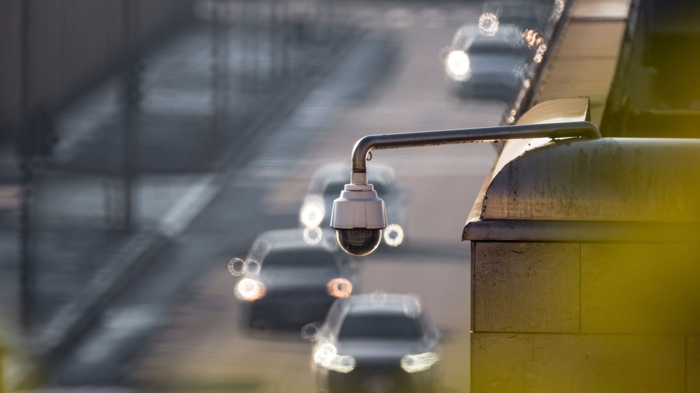
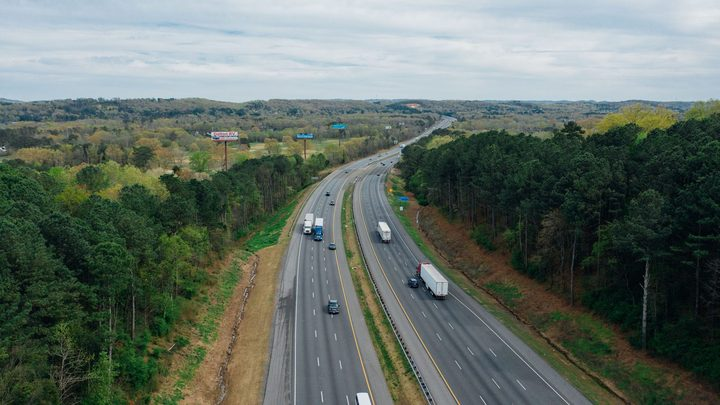

Porto Belo · Segurança
Porto Belo · SegurançaGuarda Municipal de Porto Belo fecha o primeiro semestre com mais de 3,2 mil ocorrências
Quem opera na rua o que a câmera enxerga da central.
Entre os equipamentos novos há uma câmera que gira por controle remoto e outra que lê placa de carro. A conta da compra e da instalação foi paga pela empresa Allwert.
Em 30 segundos · Modo de Leitura, formato original Santa Informa
Porto Belo integrou 15 câmeras novas ao sistema de videomonitoramento.
Com elas, a cidade chega a 114 câmeras integradas.
Todas fazem parte do projeto SeguraCidade, desenvolvido pela empresa Pixel.
A compra e a instalação foram custeadas pela empresa Allwert.
Uma das novas é PTZ, que gira e é controlada a distância.
Outra é LPR, que lê e identifica placa de veículo.
A Pixel mantém estrutura, operação, manutenção, conexão e energia.
As imagens ficam disponíveis para Polícia Militar, Civil e Federal.
Também para PRF, Guarda Municipal, agentes de trânsito e Defesa Civil.
O uso previsto é prevenção, monitoramento e investigação.
Um acordo com a Prefeitura garante o acesso oficial da Guarda Municipal.
A informação foi publicada pela Prefeitura em 2 de setembro.
Poder PúblicoPublicada em Redação Santa Informa

Porto Belo ganhou 15 câmeras novas de monitoramento, e com elas a cidade passa a ter 114 equipamentos integrados ao mesmo sistema. A informação foi divulgada pela Prefeitura em 2 de setembro. As câmeras entram no projeto SeguraCidade, desenvolvido pela empresa Pixel, e a compra e a instalação foram custeadas pela empresa Allwert.
Duas delas não são câmeras comuns. Uma é do tipo PTZ, sigla para uma câmera que gira, inclina e aproxima a imagem por controle remoto, sem ninguém precisar subir no poste. A outra é LPR, que lê e identifica a placa dos veículos que passam. As demais são de monitoramento padrão, apontadas para pontos fixos da cidade. A Prefeitura não divulgou em quais ruas ou bairros os equipamentos foram instalados.
Segundo a Prefeitura, as imagens ficam disponíveis para Polícia Militar, Polícia Civil, Polícia Federal, Polícia Rodoviária Federal, Guarda Municipal, agentes de trânsito e Defesa Civil, cada um conforme a própria atribuição. O uso previsto é prevenção, monitoramento e investigação. Um acordo firmado entre a Pixel e o município garante o acesso oficial da Guarda Municipal ao sistema.
Depois de instalados, os equipamentos ficam sob responsabilidade da Pixel, que mantém a estrutura, a operação, a manutenção, a conectividade e a energia de tudo o que está integrado à plataforma. É um modelo que já apareceu por aqui em outras frentes do litoral: a empresa banca e opera, e o poder público entra com o uso e a fiscalização.
Porto Belo é vizinha de Itapema e divide com ela o mesmo fluxo de temporada, a mesma BR-101 e boa parte do mesmo movimento de fim de semana. Câmera que lê placa muda a rotina de quem investiga furto de veículo, e câmera que gira ajuda a acompanhar aglomeração e alagamento em tempo real. Vale acompanhar como o sistema se comporta no verão, quando a população da região praticamente dobra.
O resumo de 30 segundos está no topo e a versão completa é o texto acima. Aqui ficam as três leituras da casa sobre o mesmo assunto.
Clara, a otimista
Chegar a 114 câmeras sem tirar dinheiro do caixa da Prefeitura é um bom negócio para uma cidade do tamanho de Porto Belo. A empresa comprou, instalou e ainda fica com a manutenção, a conexão e a energia.
E a integração é o que mais vale. Uma imagem que a Guarda Municipal vê, a Polícia Civil também vê, e isso encurta muito o caminho de uma investigação que antes dependia de pedir gravação de porta em porta.
Seu Prudêncio, o criterioso
Merece atenção o que não foi divulgado. Não sabemos o valor investido, o prazo do acordo, nem qual a contrapartida da empresa que custeou os equipamentos. Quando a estrutura de monitoramento público fica na mão de uma empresa privada, essas três informações são justamente as que dão segurança ao município.
Vale acompanhar também a parte de dados. Câmera que lê placa produz um registro de deslocamento de gente comum, e é razoável querer saber por quanto tempo isso fica guardado e quem precisa autorizar cada consulta. Nada disso está no comunicado, e é o tipo de regra que costuma vir na regulamentação, não no anúncio.
Feita a ressalva, a decisão em si é boa. Integrar as imagens num sistema único, com acesso definido por atribuição de cada órgão, é melhor que a colcha de retalhos de câmeras isoladas que a maioria das cidades do litoral ainda tem.
Caco, o sarcástico
Cento e quatorze câmeras. Porto Belo virou a cidade mais fotografada do litoral, e ninguém posou.
Tem até câmera que lê placa. Agora o carro é reconhecido antes do motorista, o que para algumas pessoas é um alívio.
E a melhor parte é que a conta foi de outro. Toda cidade merece um vizinho generoso assim, de preferência com nota fiscal.
Fontes: Prefeitura de Porto Belo, comunicado publicado em 2 de setembro de 2026, de onde saem as 15 câmeras novas, o total de 114 equipamentos integrados, o nome do projeto SeguraCidade, o custeio pela empresa Allwert, a manutenção e a operação pela empresa Pixel, a presença de uma câmera PTZ e de uma câmera LPR, a lista de órgãos com acesso às imagens e o acordo que garante o acesso oficial da Guarda Municipal. A imagem do topo é ilustrativa, de banco gratuito, e não mostra as câmeras de Porto Belo.
Porto Belo · SegurançaQuem opera na rua o que a câmera enxerga da central.
 Porto Belo · Infraestrutura
Porto Belo · InfraestruturaOutra frente da Prefeitura que mexe no que está pendurado no poste.

Navegantes · TrânsitoOutra cidade do litoral dividindo tarefa de fiscalização com força federal.